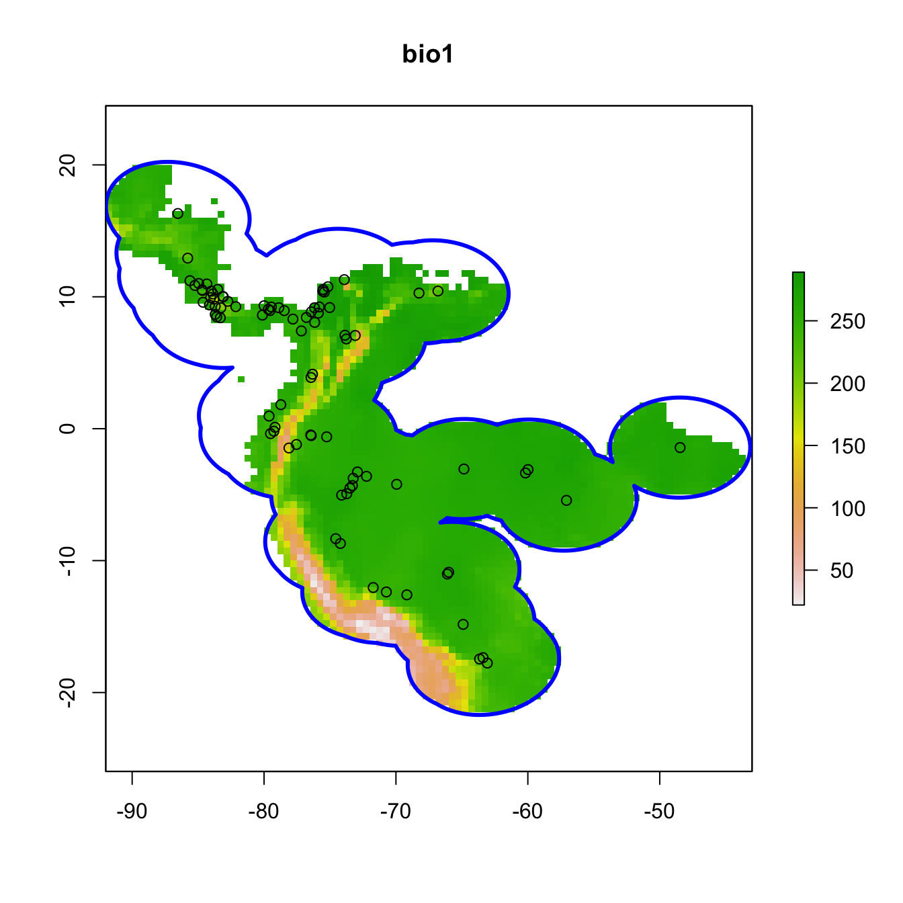
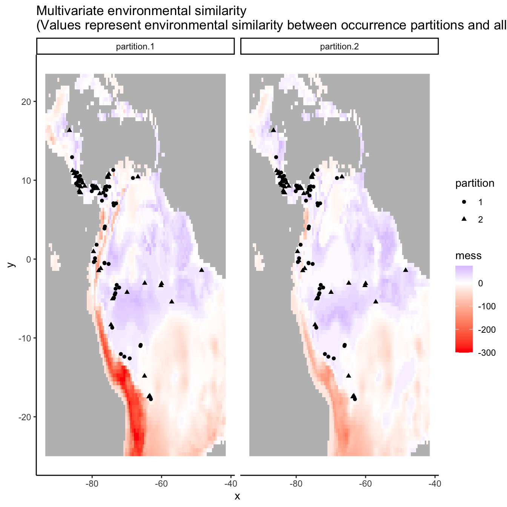
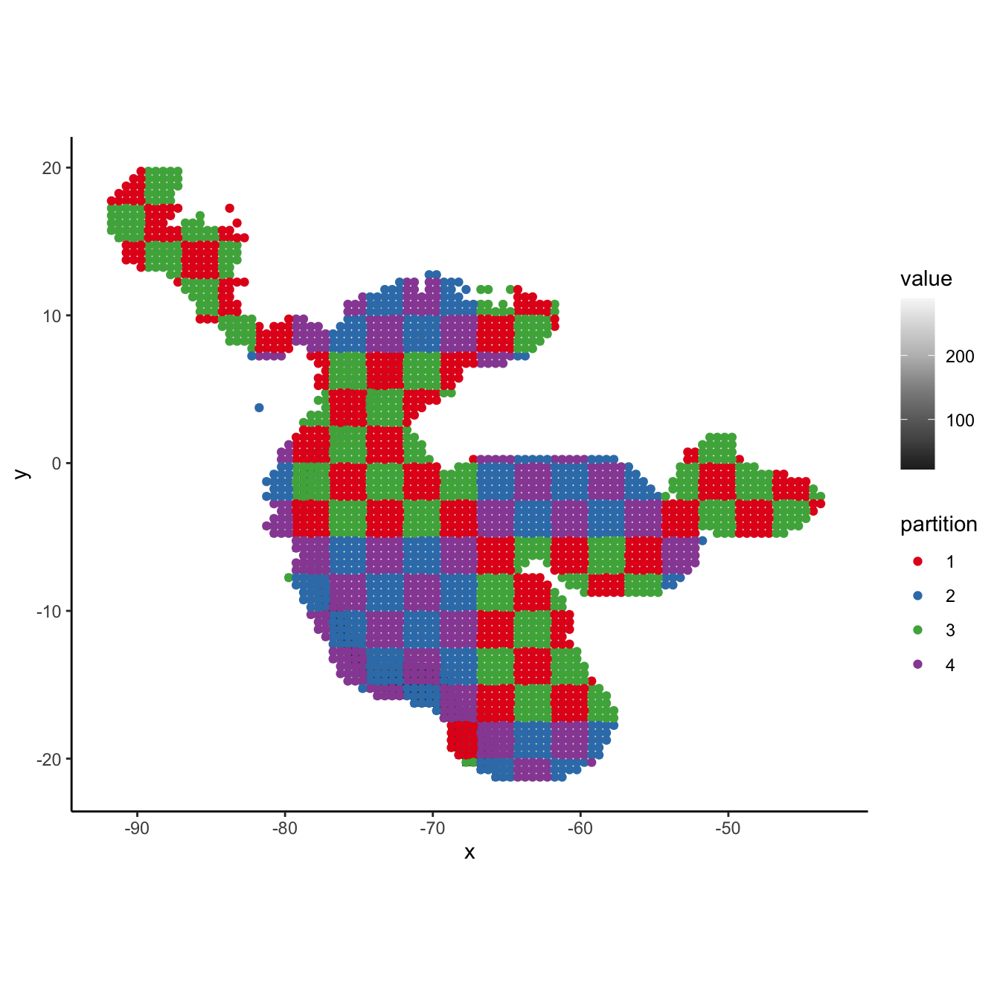
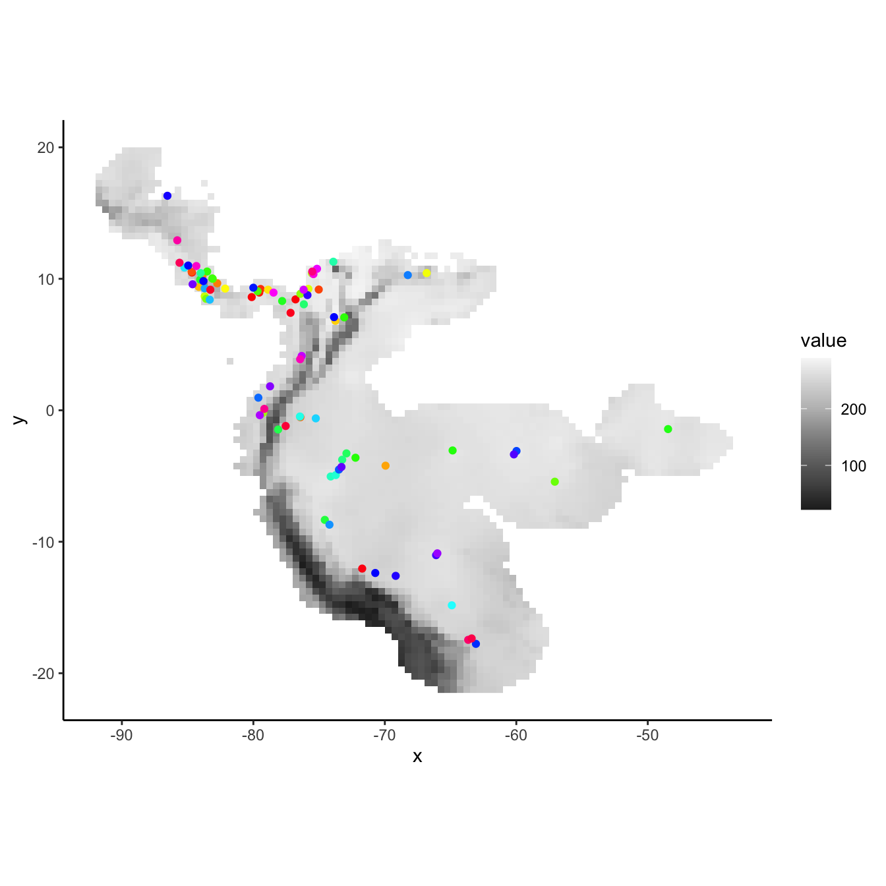
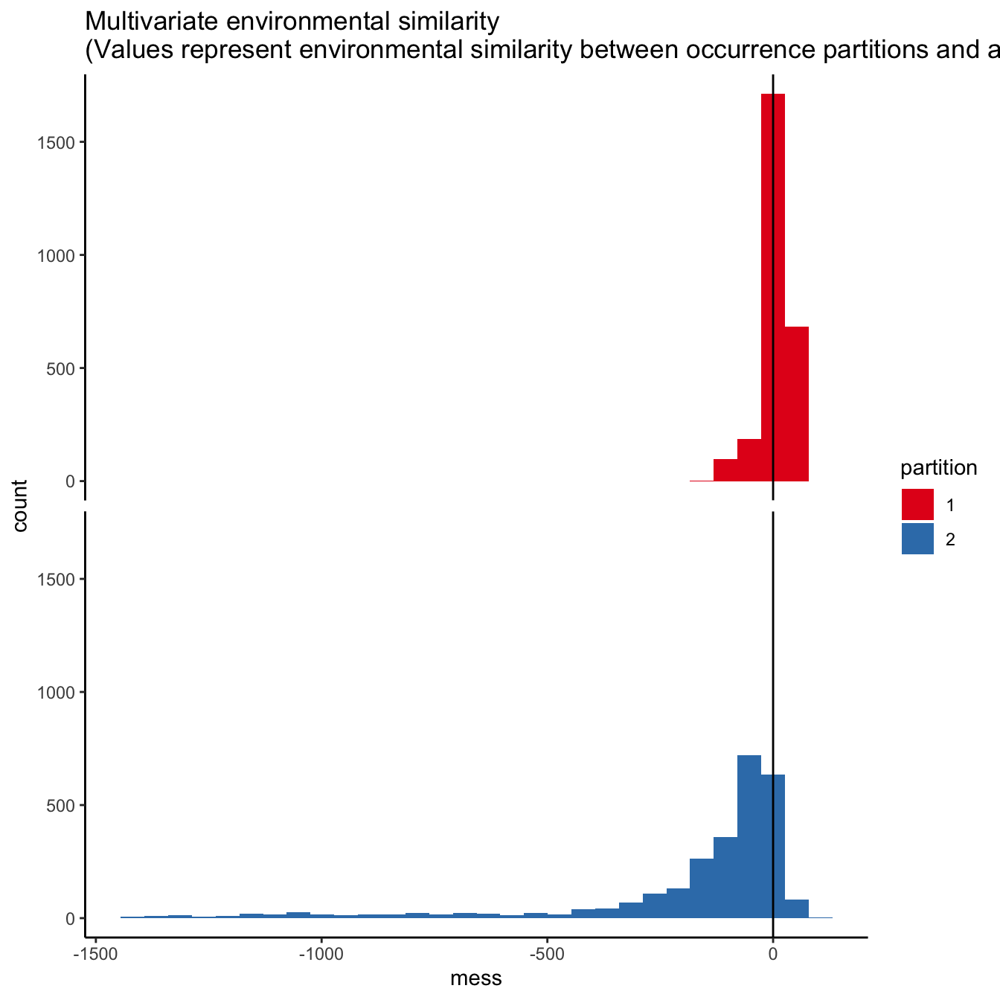
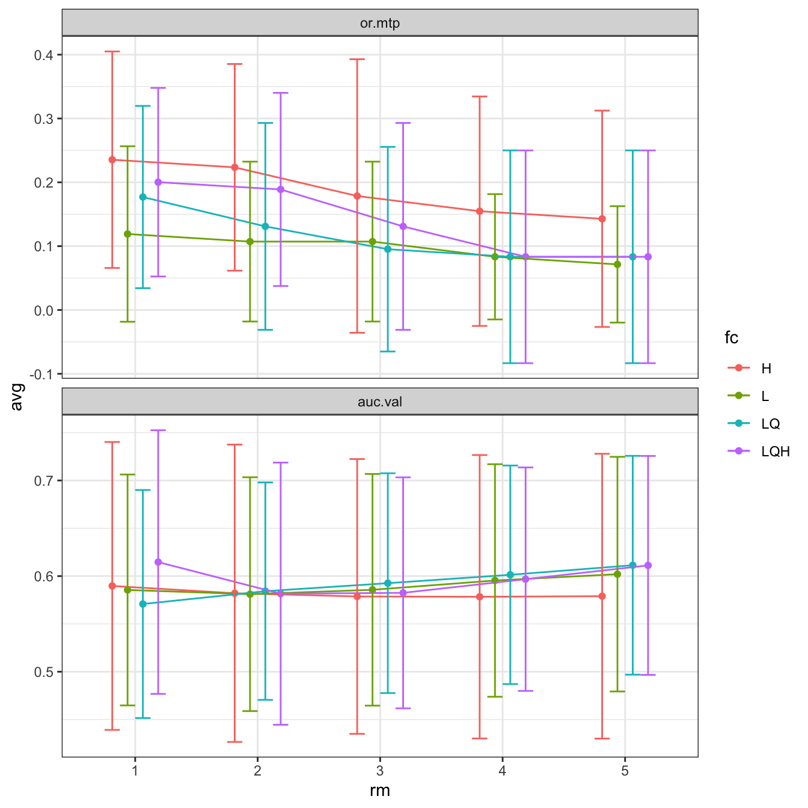

# Load packages -- the order here is important because some pkg functions overwrite others.
library(ENMeval)
library(raster)
library(dplyr)
# Set a random seed in order to be able to reproduce this analysis.
set.seed(48)
# You can search online databases like GBIF using the spocc package (commented below),
# but here we will load in some pre-downloaded data.
# bv <- spocc::occ('Bradypus variegatus', 'gbif', limit=300, has_coords=TRUE)
# occs <- as.data.frame(bv$gbif$data$Bradypus_variegatus[,2:3])
occs <- readRDS("bvariegatus.rds")
# Removing occurrences that have the same coordinates is good practice to
# avoid pseudoreplication.
occs <- occs[!duplicated(occs),]ENMeval 2.0 tutorial
- Introduction
- Data Acquisition & Pre-processing
- Partitioning Occurrences for Evaluation
- Running ENMeval
- Model Selection
- Plotting results
- Null Models
- Metadata
- References and Resources
Introduction
ENMeval is an R package that performs automated tuning and evaluations of ecological niche models (ENMs, a.k.a. species distribution models or SDMs), which can estimate species’ ranges and niche characteristics using data on species occurrences and environmental variables (Franklin 2010, Peterson et al. 2011, Guisan et al. 2017).
Some of the most frequently used ENMs are machine learning algorithms with settings that can be “tuned” to determine optimal levels of model complexity (Hastie et al. 2009, Radosavljevic & Anderson 2014, Hallgren et al. 2019). In implementation, this means building models of varying settings, then evaluating them and comparing their performance to select the optimal settings. Such tuning exercises can result in models that balance goodness-of-fit (i.e., avoiding overfitting) and predictive ability. Model evaluation is often done with cross-validation, which consists of partitioning the data into groups, building a model with all the groups but one, evaluating this model on the left-out group, then repeating the process until all groups have been left out once (Hastie et al. 2009, Roberts et al. 2017).
ENMeval has one primary function, ENMevaluate(), which runs the tuning analysis and evaluations, returning an ENMevaluation object that contains the results. These results include a table of evaluation statistics, fitted model objects, and prediction rasters for each combination of model settings. The older versions of ENMeval (0.3.0 and earlier; Muscarella et al. 2014) implemented only the ENM presence-background algorithm Maxent through the Java software maxent.jar and the R package maxnet, but ENMeval 2.0 offers functionality for adding and customizing the implementations of ENM algorithms and their evaluations. This new version also features automatic generation of metadata, a null model for calculating effect size and significance of performance metrics, various plotting tools, options for parallel computing, and more.
In this updated vignette, we detail a full ENM analysis: acquisition and processing of input data, sampling background data, deciding on partitioning methods, tuning models, examining results and selecting optimal model settings, building null models to test for significance of performance metrics, and more using ENMeval 2.0 and other relevant R packages. In addition to this vignette, there are other excellent tutorials on ENMs, some of which can be found in the References and Resources section.
Data Acquisition & Pre-processing
We’ll start by downloading an occurrence dataset for Bradypus variegatus, the brown-throated sloth. Along the way, if you notice you cannot load a particular package, simply install it with install.packages(), then try library() again.
We are going to model the climatic niche suitability for our focal species using climate data from WorldClim. WorldClim has a range of variables available at various resolutions; for simplicity, here we’ll use the 9 bioclimatic variables at 10 arcmin resolution (about 20 km across at the equator) included in the dismo package from WorldClim 1.4. These climatic data are based on 50-year averages from 1950-2000.
# Locate the predictor raster files from the dismo folder.
envs.files <- list.files(path=paste(system.file(package='dismo'), '/ex', sep=''),
pattern='grd', full.names=TRUE)
# Read the raster files into a RasterStack.
# These variables represent 8 bioclimatic variables and one categorical variable "biome".
# Find the descriptions of the bioclimatic variables here:
# https://www.worldclim.org/data/bioclim.html
envs <- raster::stack(envs.files)
# The biome raster has some NAs for cells that have values in the other rasters.
# Let's mask all rasters to biome to change the value of these cells to NA for all rasters.
# ENMeval will do this automatically, but let's do it here to avoid the warning message later.
# We change back from a RasterBrick to RasterStack because of issues with assigning
# factor rasters for RasterBricks.
envs <- raster::mask(envs, envs[[9]]) %>% raster::stack()
# Make sure to declare the categorical variable as a factor
envs$biome <- raster::as.factor(envs$biome)
# Let's now remove occurrences that are cell duplicates -- these are
# occurrences that share a grid cell in the predictor variable rasters.
# Although Maxent does this by default, keep in mind that for other algorithms you may
# or may not want to do this based on the aims of your study.
# Another way to space occurrence records a defined distance from each other to avoid
# spatial autocorrelation is with spatial thinning (Aiello-Lammens et al. 2015).
occs.cells <- raster::extract(envs[[1]], occs, cellnumbers = TRUE)
occs.cellDups <- duplicated(occs.cells[,1])
occs <- occs[!occs.cellDups,]
# Plot first raster in the stack, the mean annual temperature.
plot(envs[[1]], main="Mean annual temperature")
# Add points for all the occurrence points onto the raster.
points(occs)
# There are some points east of the Amazon River.
# Suppose we know this is a population that we don't want to include in the model.
# We can remove these points from the analysis by subsetting the occurrences by
# latitude and longitude.
occs <- filter(occs, latitude > -20, longitude < -45)
# Plot the subsetted occurrences to make sure we filtered correctly.
points(occs, col = 'red')Now let’s take a look at which areas of this extent are climatically different with respect to the areas associated with the occurrence points. To do this, we’ll use the Multivariate Environmental Similarity surface, or MESS (Elith et al. 2010). Higher positive values indicate increasing similarity, while higher negative values indicate dissimilarity. Other methods besides MESS have also been proposed and warrant exploration (e.g., Owens et al. 2013, Mesgaran et al. 2014). This is important to investigate when considering model transfer to other times or places, as environments that are extremely dissimilar to those used to train the model in the present can result in projections with high uncertainty (Wenger & Olden 2012, Wright et al. 2015, Soley-Guardia 2019).
Although the mess() function from the dismo package is frequently used, here we will use tools from the package rmaxent (Baumgartner & Wilson 2021) because it also plots maps of the most similar and dissimilar variables – this functionality is currently included in ENMeval in the similarity() function. We will demonstrate the ENMeval plotting functions for environmental similarity later.
# First we extract the climatic variable values at the occurrence points -- these values are
# our "reference".
# We remove the categorical variable for these operations because the math only makes sense
# for continuous variables -- the function will not work with categorical variables.
occs.z <- raster::extract(envs[[-9]], occs)
# Now we use the similarity() function (borrowed from the rmaxent package) to calculate
# environmental similarity metrics of our predictor variable extent compared to the reference
# points.
occs.sim <- similarity(envs[[-9]], occs.z)
occs.mess <- occs.sim$similarity_min
# This is the MESS plot -- increasingly negative values represent increasingly different
# climatic conditions from the reference (our occurrences), while increasingly positive
# values are more similar. First, we'll make a SpatialPoints object for our occurrences
# for plotting with levelplot() from the rasterVis package (Lamigueiro & Hijmans 2021).
# This package has great plotting functionality for rasters, and by default bins values for
# display when data is continuous.
occs.sp <- sp::SpatialPoints(occs)
# Vector data (points, polygons) are added to a levelplot with a "+", like ggplot.
rasterVis::levelplot(occs.mess, main = "Environmental similarity", margin = FALSE) +
latticeExtra::layer(sp.points(occs.sp, col="black"))# Continuous plotting can be done as demonstrated below by specifiying a scale
myScale <- seq(cellStats(occs.mess, min), cellStats(occs.mess, max), length.out = 100)
rasterVis::levelplot(occs.mess, main = "Environmental similarity", at = myScale, margin = FALSE) +
latticeExtra::layer(sp.points(occs.sp, col="black"))# Here we define some good colors for representing categorical variables
cols <- RColorBrewer::brewer.pal(8, "Set1")
# This map shows the variable for each grid cell that is most different from the reference
rasterVis::levelplot(occs.sim$mod, col.regions = cols, main = "Most different variable") +
latticeExtra::layer(sp.points(occs.sp, col="black"))# This map shows the variable for each grid cell that is most similar to the reference
rasterVis::levelplot(occs.sim$mos, col.regions = cols, main = "Most similar variable") +
latticeExtra::layer(sp.points(occs.sp, col="black"))Since our models will compare the environment at occurrence localities to the environment at background localities, we need to sample random points from a background extent. Now we will specify the study extent that defines where we sample background data by cropping our global predictor variable rasters to a smaller region. To help ensure we do not include areas that are suitable for our species but are unoccupied due to limitations like dispersal constraints, we will conservatively define the background extent as an area surrounding our occurrence localities (VanDerWal et al. 2009, Merow et al. 2013). We will do this by buffering a bounding box that includes all occurrence localities. Some other methods of background extent delineation (e.g., minimum convex hulls) are more conservative because they better characterize the geographic space holding the points. In any case, this is one of the many things that you will need to carefully consider for your own study.
# We'll now experiment with a different spatial R package called sf (simple features).
# Let's make our occs into a sf object -- as the coordinate reference system (crs) for these
# points is WGS84, a geographic crs (lat/lon) and the same as our envs rasters, we specify it
# as the RasterStack's crs.
occs.sf <- sf::st_as_sf(occs, coords = c("longitude","latitude"), crs = raster::crs(envs))
# Now, we project our point data to an equal-area projection, which converts our
# degrees to meters, which is ideal for buffering (the next step).
# We use the typical Eckert IV projection.
eckertIV <- "+proj=eck4 +lon_0=0 +x_0=0 +y_0=0 +datum=WGS84 +units=m +no_defs"
occs.sf <- sf::st_transform(occs.sf, crs = eckertIV)
# Buffer all occurrences by 500 km, union the polygons together
# (for visualization), and convert back to a form that the raster package
# can use. Finally, we reproject the buffers back to WGS84 (lat/lon).
# We choose 500 km here to avoid sampling the Caribbean islands.
occs.buf <- sf::st_buffer(occs.sf, dist = 500000) %>%
sf::st_union() %>%
sf::st_sf() %>%
sf::st_transform(crs = raster::crs(envs))
plot(envs[[1]], main = names(envs)[1])
points(occs)
# To add sf objects to a plot, use add = TRUE
plot(occs.buf, border = "blue", lwd = 3, add = TRUE)
# Crop environmental rasters to match the study extent
envs.bg <- raster::crop(envs, occs.buf)
# Next, mask the rasters to the shape of the buffers
envs.bg <- raster::mask(envs.bg, occs.buf)
plot(envs.bg[[1]], main = names(envs)[1])
points(occs)
plot(occs.buf, border = "blue", lwd = 3, add = TRUE)
In the next step, we’ll sample 10,000 random points from the background (note that the number of background points is also a consideration you should make with respect to your own study).
# Randomly sample 10,000 background points from one background extent raster
# (only one per cell without replacement). Note: Since the raster has <10,000 pixels,
# you'll get a warning and all pixels will be used for background. We will be sampling
# from the biome variable because it is missing some grid cells, and we are trying to
# avoid getting background points with NA. If one raster in the stack has NAs where the
# other rasters have data, ENMeval internally converts these cells to NA.
bg <- dismo::randomPoints(envs.bg[[9]], n = 10000) %>% as.data.frame()
colnames(bg) <- colnames(occs)
# Notice how we have pretty good coverage (every cell).
plot(envs.bg[[1]])
points(bg, pch = 20, cex = 0.2)Partitioning Occurrences for Evaluation
A run of ENMevaluate() begins by using one of seven methods to partition occurrence localities into validation and training bins (folds) for k-fold cross-validation (Fielding & Bell 1997, Hastie et al. 2009, Peterson et al. 2011). Data partitioning is done internally by ENMevaluate() based on what the user inputs for the partitions argument, but this can also be done externally using the partitioning functions. In this section, we explain and illustrate these different functions. We also demonstrate how to make informative plots of partitions and the environmental similarity of partitions to the background or study extent.
- Spatial Block
- Spatial Checkerboard
- Spatial Hierarchical Checkerboard
- Jackknife (leave-one-out)
- Random k-fold
- Fully Withheld Testing Data
- User
The first three partitioning methods are variations of what Radosavljevic and Anderson (2014) referred to as ‘masked geographically structured’ data partitioning. Basically, these methods partition both occurrence and background records into evaluation bins based on spatial rules. The intention is to reduce spatial-autocorrelation between points that are included in the validation and training bins, which can overinflate model performance, at least for data sets that result from biased sampling (Veloz 2009, Wenger & Olden 2012, Roberts et al. 2017). Other spatial partitioning methods for ENMs can be found in the R package blockCV (Valavi et al. 2019), which we demonstrate below for use with ENMeval.
1. Block
First, the ‘block’ method partitions data according to the latitude and longitude lines that divide the occurrence localities into four spatial groups of equal numbers (or as close as possible). Both occurrence and background localities are assigned to each of the four bins based on their position with respect to these lines – the first direction bisects the points into two groups, and the second direction bisects each of these further into two groups each, resulting in four groups. The resulting object is a list of two vectors that supply the bin designation for each occurrence and background point. In ENMeval 2.0, users can additionally specify different orientations for the blocking with the orientation argument.
block <- get.block(occs, bg, orientation = "lat_lon")
# Let's make sure that we have an even number of occurrences in each partition.
table(block$occs.grp)
#>
#> 1 2 3 4
#> 22 21 22 21
# We can plot our partitions on one of our predictor variable rasters to visualize
# where they fall in space.
# The ENMeval 2.0 plotting functions use ggplot2 (Wickham 2016), a popular plotting
# package for R with many online resources.
# We can add to the ggplots with other ggplot functions in an additive way, making
# these plots easily customizable.
evalplot.grps(pts = occs, pts.grp = block$occs.grp, envs = envs.bg) +
ggplot2::ggtitle("Spatial block partitions: occurrences")# PLotting the background shows that the background extent is partitioned in a way
# that maximizes evenness of points across the four bins, not to maximize evenness of area.
evalplot.grps(pts = bg, pts.grp = block$bg.grp, envs = envs.bg) +
ggplot2::ggtitle("Spatial block partitions: background")
# If we are curious how different the environment associated with each partition is from
# that of all the others, we can use this function to plot histograms or rasters of MESS
# predictions with each partition as the reference.
# First we need to extract the predictor variable values at our occurrence and
# background localities.
occs.z <- cbind(occs, raster::extract(envs, occs))
bg.z <- cbind(bg, raster::extract(envs, bg))
evalplot.envSim.hist(sim.type = "mess", ref.data = "occs", occs.z = occs.z, bg.z = bg.z,
occs.grp = block$occs.grp, bg.grp = block$bg.grp, categoricals = "biome")evalplot.envSim.hist(sim.type = "most_diff", ref.data = "occs", occs.z = occs.z, bg.z = bg.z,
occs.grp = block$occs.grp, bg.grp = block$bg.grp, categoricals = "biome")evalplot.envSim.hist(sim.type = "most_sim", ref.data = "occs", occs.z = occs.z, bg.z = bg.z,
occs.grp = block$occs.grp, bg.grp = block$bg.grp, categoricals = "biome")
# Here we plot environmental similarity values for the entire extent with respect
# to each validation group.
# We use the bb.buf (bounding box buffer) argument to zoom in to our study extent.
evalplot.envSim.map(sim.type = "mess", ref.data = "occs", envs = envs, occs.z = occs.z,
bg.z = bg.z, occs.grp = block$occs.grp, bg.grp = block$bg.grp,
categoricals = "biome", bb.buf = 7)evalplot.envSim.map(sim.type = "most_diff", ref.data = "occs", envs = envs, occs.z = occs.z,
bg.z = bg.z, occs.grp = block$occs.grp, bg.grp = block$bg.grp,
categoricals = "biome", bb.buf = 7)evalplot.envSim.map(sim.type = "most_sim", ref.data = "occs", envs = envs, occs.z = occs.z,
bg.z = bg.z, occs.grp = block$occs.grp, bg.grp = block$bg.grp,
categoricals = "biome", bb.buf = 7)2. Checkerboard1
The next two partitioning methods are variants of a ‘checkerboard’ approach to partition occurrence localities (Radosavljevic & Anderson 2014). These generate checkerboard grids across the study extent and partition the localities into groups based on where they fall on the checkerboard. In contrast to the block method, both checkerboard methods subdivide geographic space equally but do not ensure a balanced number of occurrence localities in each bin. For these methods, the user needs to provide a raster layer on which to base the underlying checkerboard pattern. Here we simply use the predictor variable RasterStack. Additionally, the user needs to define an aggregation.factor. This value specifies the number of grids cells to aggregate when making the underlying checkerboard pattern.
The checkerboard1 method partitions the points into k = 2 spatial groups using a simple checkerboard pattern.
cb1 <- get.checkerboard1(occs, envs.bg, bg, aggregation.factor=5)
evalplot.grps(pts = occs, pts.grp = cb1$occs.grp, envs = envs.bg)# Plotting the background points shows the checkerboard pattern clearly.
evalplot.grps(pts = bg, pts.grp = cb1$bg.grp, envs = envs.bg)# We can see from the MESS maps that this method results in similar environmental
# representation between the partitions.
evalplot.envSim.hist(sim.type = "mess", ref.data = "occs", occs.z = occs.z, bg.z = bg.z,
occs.grp = cb1$occs.grp, bg.grp = cb1$bg.grp, categoricals = "biome")evalplot.envSim.map(sim.type = "mess", ref.data = "occs", envs = envs, occs.z = occs.z,
bg.z = bg.z, occs.grp = cb1$occs.grp, bg.grp = cb1$bg.grp,
categoricals = "biome", bb.buf = 7)
# We can increase the aggregation factor to give the groups bigger boxes.
# This can result in groups that are more environmentally different from each other.
cb1.large <- get.checkerboard1(occs, envs.bg, bg, aggregation.factor=30)
evalplot.grps(pts = occs, pts.grp = cb1.large$occs.grp, envs = envs.bg)evalplot.grps(pts = bg, pts.grp = cb1.large$bg.grp, envs = envs.bg)evalplot.envSim.hist(sim.type = "mess", ref.data = "occs", occs.z = occs.z,
bg.z = bg.z, occs.grp = cb1.large$occs.grp, bg.grp = cb1$bg.grp,
categoricals = "biome")evalplot.envSim.map(sim.type = "mess", ref.data = "occs", envs = envs, occs.z = occs.z,
bg.z = bg.z, occs.grp = cb1.large$occs.grp, bg.grp = cb1$bg.grp,
categoricals = "biome", bb.buf = 7)3. Checkerboard2
The Checkerboard2 method partitions the data into k = 4 spatial groups. This is done by hierarchically aggregating the input raster at two scales. Presence and background groups are assigned based on which box they fall into on the hierarchical checkerboard.
cb2 <- get.checkerboard2(occs, envs.bg, bg, aggregation.factor=c(5,5))
evalplot.grps(pts = occs, pts.grp = cb2$occs.grp, envs = envs.bg)# Plotting the background points shows the checkerboard pattern very clearly.
evalplot.grps(pts = bg, pts.grp = cb2$bg.grp, envs = envs.bg)
# Different from checkerboard1, some partitions here do show some difference
# in environmental representation, but not as consistently different as with block.
evalplot.envSim.hist(sim.type = "mess", ref.data = "occs", occs.z = occs.z,
bg.z = bg.z, occs.grp = cb2$occs.grp, bg.grp = cb2$bg.grp,
categoricals = "biome")evalplot.envSim.map(sim.type = "mess", ref.data = "occs", envs = envs, occs.z = occs.z,
bg.z = bg.z, occs.grp = cb2$occs.grp, bg.grp = cb2$bg.grp,
categoricals = "biome", bb.buf = 7)4. Jackknife (leave-one-out)
The next two methods differ from the first three in that (a) they do not partition the background points into different groups (meaning that the full background is used to evaluate each partition), and (b) they do not account for spatial autocorrelation between validation and training localities. Primarily when working with relatively small data sets (e.g. < ca. 25 presence localities), users may choose a special case of k-fold cross-validation where the number of bins (k) is equal to the number of occurrence localities (n) in the data set (Pearson et al. 2007; Shcheglovitova & Anderson 2013). This is referred to as jackknife, or leave-one-out, partitioning (Hastie et al. 2009). As n models are processed with this partitioning method, the computation time could be long for large occurrence datasets.
jack <- get.jackknife(occs, bg)
# If the number of input points is larger than 10, the legend for the groups
# is suppressed.
evalplot.grps(pts = occs, pts.grp = jack$occs.grp, envs = envs.bg)
5. Random k-fold
The ‘random k-fold’ method partitions occurrence localities randomly into a user-specified number of (k) bins (Hastie et al. 2009). This method is equivalent to the ‘cross-validate’ partitioning scheme available in the current version of the Maxent software GUI. Especially with larger occurrence datasets, this partitioning method could randomly result in some spatial clustering of groups, which is why spatial partitioning methods are preferable for addressing spatial autocorrelation (Roberts et al. 2017). Below, we partition the data into five random groups.
rand <- get.randomkfold(occs, bg, k = 5)
evalplot.grps(pts = occs, pts.grp = rand$occs.grp, envs = envs.bg)# As the partitions are random, there is no large environmental difference between them.
evalplot.envSim.hist(sim.type = "mess", ref.data = "occs", occs.z = occs.z,
bg.z = bg.z, occs.grp = rand$occs.grp, bg.grp = rand$bg.grp,
categoricals = "biome")evalplot.envSim.map(sim.type = "mess", ref.data = "occs", envs = envs, occs.z = occs.z,
bg.z = bg.z, occs.grp = rand$occs.grp, bg.grp = rand$bg.grp,
categoricals = "biome", bb.buf = 7)6. Fully Withheld Testing Data
The ‘testing’ method evaluates the model on a fully withheld testing dataset that is not used to create the full model (i.e., not included in the training data), meaning that cross validation statistics are not calculated. Evaluations with fully withheld testing data have been shown to result in models with better transferability (Soley-Guardia et al. 2019).
To illustrate this, we will make a table containing occurrences representing both training data and fully withheld testing data (which we simulate) and plot the partitions in the same way as above. However, the testing data (group 2) will not become training data for a new model. Instead, the training data (group 1) is used to make the model, and the testing data (group 2) are used only to evaluate it. Thus, the background extent does not include the testing data (a few points fall inside this extent because of the buffer we applied, but they are not used as training data).
# First, let's specify a fake testing occurrence dataset and plot the testing points with
# the rest of our data
occs.testing <- data.frame(longitude = -runif(10, 55, 65), latitude = runif(10, -10, 0))
evalplot.grps(pts = rbind(occs, occs.testing),
pts.grp = c(rep(1, nrow(occs)), rep(2, nrow(occs.testing))), envs = envs.bg)# Next, let's extract the predictor variable values for our testing points.
occs.testing.z <- cbind(occs.testing, raster::extract(envs, occs.testing))
# We use the same background groups as random partitions here because the background used
# for testing data is also from the full study extent. We use here the occs.testing.z
# parameter to add information for our testing localities, and we set the partitions
# for occurrences all to zero (as no partitioning is done).
evalplot.envSim.hist(sim.type = "mess", ref.data = "occs", occs.z = occs.z,
bg.z = bg.z, occs.grp = rep(0, nrow(occs)), bg.grp = rand$bg.grp,
categoricals = "biome", occs.testing.z = occs.testing.z)
evalplot.envSim.map(sim.type = "mess", ref.data = "occs", envs = envs, occs.z = occs.z,
bg.z = bg.z, occs.grp = rep(0, nrow(occs)), bg.grp = rand$bg.grp,
categoricals = "biome", bb.buf = 7, occs.testing.z = occs.testing.z)# We can see what is to be expected -- the testing dataset is much more restricted
# environmentally than the training data, and thus is much more difference with the
# study extent.7. User-defined
For maximum flexibility, the last partitioning method is designed so that users can define a priori partitions. This provides a flexible way to conduct spatially-independent cross-validation with background masking. For example, we demonstrate partitioning the occurrence data based on k-means groups. The user-defined partition option can also be used to input partition groups derived from other sources.
# Here we run a k-means clustering algorithm to group our occurrences into discrete spatial
# groups based on their coordinates.
grp.n <- 6
kmeans <- kmeans(occs, grp.n)
occs.grp <- kmeans$cluster
evalplot.grps(pts = occs, pts.grp = occs.grp, envs = envs.bg)When using the user-defined partitioning method, we need to supply ENMevaluate() with group identifiers for both occurrence AND background records If we want to use all background records for each group, we can set the background to zero.
# Assign all background records
bg.grp <- rep(0, nrow(bg))
evalplot.grps(pts = bg, pts.grp = bg.grp, envs = envs.bg)Alternatively, we may think of various ways to partition background data. This depends on the goals of the study but we might, for example, find it reasonable to partition background records by assigning groups based on distance to the centroids of the occurrence clusters.
# Here we find the centers of the occurrence k-means clusters and calculate the spatial
# distance of each background point to them. We then find which center had the minimum
# distance for each record and assign that record to this centroid group.
centers <- kmeans$center
d <- raster::pointDistance(bg, centers, lonlat = TRUE)
bg.grp <- apply(d, 1, function(x) which(x == min(x)))
evalplot.grps(pts = bg, pts.grp = bg.grp, envs = envs.bg)We can also use other packages to partition our data. As an example, we next show how to use the R package blockCV (Valavi et al. 2019) to generate spatial partitions to input into ENMevaluate(). We use the spatialBlock() function to generate blocks similar to the checkerboard partition in ENMeval, except that we choose here to select partitions randomly over these blocks. This package offers other kinds of block partitioning methods as well. Using other packages in this way expands the variety of partitions you can use to evaluate models in ENMeval, and we highly encourage experimenting with a plurality of tools.
library(blockCV)
library(sf)
# First, we convert our occurrence and background records to spatial point data with the
# package sf and assign the correct coordinate reference system.
occsBg.sf <- sf::st_as_sf(rbind(occs, bg), coords = c("longitude","latitude"),
crs = "+proj=longlat +ellps=WGS84 +datum=WGS84 +no_defs")
raster::crs(envs.bg) <- raster::crs(occsBg.sf)
# Here, we implement the spatialBlock function from the blockCV package.
# The required inputs are similar to ENMeval partitioning functions, but here you assign
# the size of blocks in meters with the argument theRange (here set at 1000 km), and the
# partition selection method can be assigned as either "checkerboard" or "random"
# In addition, the spatialBlock function returns a map showing the different
# spatial partitions.
sb <- blockCV::spatialBlock(speciesData = occsBg.sf, rasterLayer = envs.bg,
theRange = 1000000, k = 5, selection = "random")
#> The best folds was in iteration 52:
#> train test
#> 1 2262 496
#> 2 2166 592
#> 3 2161 597
#> 4 2261 497
#> 5 2182 576# We can pull out the partition information from the SpatialBlock object to assemble
# occs.grp and bg.grp, which can be used for plotting or as user.grp inputs for ENMevaluate.
occs.grp <- sb$foldID[1:nrow(occs)]
bg.grp <- sb$foldID[(nrow(occs)+1):length(sb$foldID)]
evalplot.grps(pts = bg, pts.grp = bg.grp, envs = envs.bg)Selecting which of these data partitioning methods to use should be based on the research objectives and the characteristics of the study system. Refer to the References and Resources section for studies and resources to consult for more information concerning partitioning for model evaluation.
Running ENMeval
Once we decide which method of data partitioning we would like to use, we are ready to start building models. We now move on to the main function in ENMeval: ENMevaluate().
Initial considerations
Although any algorithm can potentially be specified in ENMeval 2.0 (see below), and ENMeval 2.0 has built-in implementations for Maxent and BIOCLIM, we will explain here the tuning procedure for Maxent models (either maxent.jar or maxnet). For Maxent models (Phillips et al. 2006, Phillips et al. 2008, Phillips et al. 2017), the two main parameters to tune when calling ENMevaluate are (1) the range of regularization multiplier values and (2) the combinations of feature classes (Elith et al. 2011, Merow et al. 2013). The regularization multiplier (RM) determines the penalty associated with including variables or their transformations in the model. Higher RM values impose a stronger penalty on model complexity and thus result in simpler (flatter) model predictions. The feature classes determine the potential shape of the marginal response curves. A model that is only allowed to include linear feature classes will most likely be simpler than a model that is allowed to include all possible feature classes. A more detailed description of these parameters is available in the References and Resources section. For the purposes of this vignette, we demonstrate simply how to adjust these parameters. The following section deals with comparing the outputs of each model.
Unless you supply the function with background points (which is recommended in many cases), you will need to define how many background points should be used with the n.bg argument. If any of your predictor variables are categorical (e.g., biomes in this dataset), you should define which layer(s) these are using the ‘categoricals’ argument or assign them as factors in the RasterStack or input table (like we did here).
ENMevaluate() builds a separate model for each unique combination of RM values and feature class combinations. For example, the following call will build and evaluate 2 models. One with RM=1 and another with RM=2, both allowing only linear features.
e.mx.l <- ENMevaluate(occs = occs, envs = envs, bg = bg,
algorithm = 'maxnet', partitions = 'block',
tune.args = list(fc = "L", rm = 1:2))e.mx.l
#> An object of class: ENMevaluation
#> occurrence/background points: 86 / 2672
#> partition method: block
#> partition settings: orientation = lat_lon
#> clamp: left: bio1, bio12, bio16, bio17, bio5, bio6, bio7, bio8, biome
#> right: bio1, bio12, bio16, bio17, bio5, bio6, bio7, bio8, biome
#> categoricals: biome
#> algorithm: maxnet
#> tune settings: fc: L
#> rm: 1,2
#> overlap: TRUE
#> Refer to ?ENMevaluation for information on slots.We may, however, want to compare a wider range of models that can use a wider variety of feature classes and regularization multipliers:
e.mx <- ENMevaluate(occs = occs, envs = envs, bg = bg,
algorithm = 'maxnet', partitions = 'block',
tune.args = list(fc = c("L","LQ","LQH","H"), rm = 1:5))e.mx
#> An object of class: ENMevaluation
#> occurrence/background points: 86 / 2672
#> partition method: block
#> partition settings: orientation = lat_lon
#> clamp: left: bio1, bio12, bio16, bio17, bio5, bio6, bio7, bio8, biome
#> right: bio1, bio12, bio16, bio17, bio5, bio6, bio7, bio8, biome
#> categoricals: biome
#> algorithm: maxnet
#> tune settings: fc: L,LQ,LQH,H
#> rm: 1,2,3,4,5
#> overlap: TRUE
#> Refer to ?ENMevaluation for information on slots.When building many models, the function may take a long time to run. Of course this depends on the size of your dataset and the computer you are using. When working on big projects, running the command in parallel (parallel=TRUE) can be considerably faster. Note that running parallel can also be slower when working on small datasets.
We can also calculate one of two niche overlap statistics while running ENMevaluate by setting the arguments overlap=TRUE and overlapStat, which support Moran’s I or Schoener’s D (Warren et al. 2008). Note that you can also calculate this value at a later stage using the separate calc.niche.overlap() function.
overlap <- calc.niche.overlap(e.mx@predictions, overlapStat = "D")overlap[1:5,]
#> fc.L_rm.1 fc.LQ_rm.1 fc.LQH_rm.1 fc.H_rm.1 fc.L_rm.2 fc.LQ_rm.2
#> fc.L_rm.1 NA NA NA NA NA NA
#> fc.LQ_rm.1 0.9048423 NA NA NA NA NA
#> fc.LQH_rm.1 0.8305069 0.8655913 NA NA NA NA
#> fc.H_rm.1 0.8197267 0.8437473 0.9536294 NA NA NA
#> fc.L_rm.2 0.9479398 0.8756846 0.8134494 0.809888 NA NA
#> fc.LQH_rm.2 fc.H_rm.2 fc.L_rm.3 fc.LQ_rm.3 fc.LQH_rm.3 fc.H_rm.3
#> fc.L_rm.1 NA NA NA NA NA NA
#> fc.LQ_rm.1 NA NA NA NA NA NA
#> fc.LQH_rm.1 NA NA NA NA NA NA
#> fc.H_rm.1 NA NA NA NA NA NA
#> fc.L_rm.2 NA NA NA NA NA NA
#> fc.L_rm.4 fc.LQ_rm.4 fc.LQH_rm.4 fc.H_rm.4 fc.L_rm.5 fc.LQ_rm.5
#> fc.L_rm.1 NA NA NA NA NA NA
#> fc.LQ_rm.1 NA NA NA NA NA NA
#> fc.LQH_rm.1 NA NA NA NA NA NA
#> fc.H_rm.1 NA NA NA NA NA NA
#> fc.L_rm.2 NA NA NA NA NA NA
#> fc.LQH_rm.5 fc.H_rm.5
#> fc.L_rm.1 NA NA
#> fc.LQ_rm.1 NA NA
#> fc.LQH_rm.1 NA NA
#> fc.H_rm.1 NA NA
#> fc.L_rm.2 NA NADifferent parameterizations
There are multiple ways to run the function ENMevaluate(), and we will go over how to specify each parameterization and what the effects are on the results.
# If maxent.jar is installed and rJava loads properly, you can also run Maxent with
# the original Java software.
tune.args <- list(fc = c("L", "LQ"), rm = 1:2)
e.mxjar <- ENMevaluate(occs, envs, bg, algorithm = "maxent.jar",
tune.args = tune.args, partitions = "block")
# 2. Testing partition: no cross validation statistics calculated; instead, model will be
# evaluated on a testing dataset that is not used to create the full model.
e.test <- ENMevaluate(occs, envs, bg, algorithm = "maxnet",
tune.args = tune.args, partitions = "testing",
occs.testing = occs.testing)
# 3. User partitions.
user.grp <- list(occs.grp = round(runif(nrow(occs), 1, 2)),
bg.grp = round(runif(nrow(bg), 1, 2)))
e.user <- ENMevaluate(occs, envs, bg, algorithm = "maxnet",
tune.args = tune.args, partitions = "user", user.grp = user.grp)
# 4. No partitions: no cross validation statistics calculated, nor any model
# evaluation on test data.
e.noCV <- ENMevaluate(occs, envs, bg, algorithm = "maxnet",
tune.args = tune.args, partitions = "none")
# 5. No raster data (a.k.a, samples with data, or SWD): no full model raster predictions
# created, so will run faster; also, both cbi.train and cbi.val will be calculated on the
# point data (training and validation background) instead of on the "envs" rasters (default).
# For this implementation, assigning the categorical variable to factor with the argument
# "categoricals" is easier, as ENMevaluate() internally assigns the levels based on both
# occs and bg, avoiding any errors associated with different factor levels when combining data.
occs.z <- cbind(occs, raster::extract(envs, occs))
bg.z <- cbind(bg, raster::extract(envs, bg))
e.swd <- ENMevaluate(occs.z, bg = bg.z, algorithm = "maxnet", tune.args = tune.args,
partitions = "block")You can also specify your own custom validation statistics for ENMevaluate() to calculate and report in the results tables. This is done by defining a custom function that has the arguments shown below, which are used by the internal function tune.validate(). Here, we add functionality to calculate the AUC ratio and associated p-value for the partial ROC perfomance metric, defined in (Peterson et al. 2008) and implemented by the R package kuenm (Cobos et al. 2019), which is currently only available on Github.
# First, make sure you install kuenm from Github.
devtools::install_github("marlonecobos/kuenm")
# Define a custom function that implements a performance metric not included in ENMeval.
# The function should have a single argument "vars", which is a list that includes the
# data most performance metrics should require -- the total list of these data can be found
# here: ?ENMevaluate. Make sure you return a data frame that specifies the names you want to
# see in the results tables.
proc <- function(vars) {
proc <- kuenm::kuenm_proc(vars$occs.val.pred, c(vars$bg.train.pred, vars$bg.val.pred))
out <- data.frame(proc_auc_ratio = proc$pROC_summary[1],
proc_pval = proc$pROC_summary[2], row.names = NULL)
return(out)
}
# Now we can run ENMevaluate() with the argument "user.eval", and simply give it the
# custom function.
e.mx.proc <- ENMevaluate(occs, envs, bg, algorithm = "maxnet",
tune.args = list(fc = "L", rm = 1:2),
partitions = "block", user.eval = proc)# We can see the new performance statistic averages in the results and
# results.partitions tables.
e.mx.proc@results
#> fc rm tune.args auc.train cbi.train auc.diff.avg auc.diff.sd auc.val.avg
#> 1 L 1 fc.L_rm.1 0.8745683 0.926 0.07986244 0.04406351 0.8591106
#> 2 L 2 fc.L_rm.2 0.8744404 0.934 0.08009704 0.04090725 0.8603552
#> auc.val.sd cbi.val.avg cbi.val.sd or.10p.avg or.10p.sd or.mtp.avg or.mtp.sd
#> 1 0.07327265 0.7775 0.1260410 0.1517210 0.1611428 0.10869565 0.1304348
#> 2 0.07288020 0.7510 0.1711568 0.1734601 0.1980550 0.09782609 0.1143459
#> proc_auc_ratio.avg proc_auc_ratio.sd proc_pval.avg proc_pval.sd AICc
#> 1 2.213807 0.1497749 0 0 1579.307
#> 2 2.192230 0.1330264 0 0 1571.192
#> delta.AICc w.AIC ncoef
#> 1 8.11448 0.0170026 6
#> 2 0.00000 0.9829974 6
e.mx.proc@results.partitions
#> tune.args fold auc.val auc.diff cbi.val or.mtp or.10p
#> 1 fc.L_rm.1 1 0.8888176 0.02294783 0.786 0.0000000 0.04166667
#> 2 fc.L_rm.1 2 0.8178372 0.06896667 0.672 0.1739130 0.21739130
#> 3 fc.L_rm.1 3 0.9469114 0.10461157 0.952 0.0000000 0.00000000
#> 4 fc.L_rm.1 4 0.7828763 0.12292367 0.700 0.2608696 0.34782609
#> 5 fc.L_rm.2 1 0.8910421 0.02809108 0.788 0.0000000 0.04166667
#> 6 fc.L_rm.2 2 0.8182386 0.06850754 0.648 0.1739130 0.21739130
#> 7 fc.L_rm.2 3 0.9471680 0.10297619 0.976 0.0000000 0.00000000
#> 8 fc.L_rm.2 4 0.7849721 0.12081335 0.592 0.2173913 0.43478261
#> proc_auc_ratio proc_pval
#> 1 2.256309 0
#> 2 2.310808 0
#> 3 1.991820 0
#> 4 2.296292 0
#> 5 2.214087 0
#> 6 2.278199 0
#> 7 1.997949 0
#> 8 2.278685 0Yet another way to run ENMevaluate() is by specifying a new algorithm using the ENMdetails object. Built-in algorithms (maxent.jar, maxnet, BIOCLIM) are implemented as ENMdetails objects—they can be found in the /R folder of the package with the file name “enm.name”, where “name” is the algorithm. The ENMdetails object specifies the way ENMevaluate() should run the algorithm. It has some simple functions that output 1) the algorithm’s name, 2) the function that runs the algorithm, 3) particular messages or errors, 4) the arguments for the model’s function, 5) a specific parameterization of the predict() function, 6) the number of non-zero model coefficients, and 7) the variable importance table (if one is available from the model object).
Users can construct their own ENMdetails object using the built-in ones as guides. For example, a user can copy the “enm.maxnet.R” script, modify the code to specify a different model, save it as a new script in the /R folder with the name “enm.myAlgorithm”, and use it to run ENMevaluate(). To be able to specify the model with the algorithm argument in ENMevaluate(), a small modification needs to be made to add it to list in the lookup.enm() internal function found in “R/utilities.R”. We plan to work with other research groups to identify best practices for tuning other algorithms with presence-background/pseudoabsence data and implement new algorithms in ENMeval in the future.
Exploring the results
Now let’s take a look at the output from ENMevaluate(), which is an ENMevaluation object, in more detail (also see ?ENMevaluation). It contains the following slots:
algorithmA character vector showing which algorithm was usedtune.settingsA data.frame of settings that were tunedpartition.methodA character of partitioning method usedpartition.settingsA list of partition settings used (i.e., value of k or aggregation factor)other.settingsA list of other modeling settings used (i.e., decisions about clamping, AUC diff calculation)doClampA logical indicating whether or not clamping was usedclamp.directionsA list of the clamping directions specifiedresultsA data.frame of evaluation summary statisticsresults.partitionsA data.frame of evaluation k-fold statisticsmodelsA list of model objectsvariable.importanceA list of data frames with variable importance for each model (when applicable)predictionsA RasterStack of model predictionstaxon.nameA character for taxon name (when specified)occsA data frame of the occurrence record coordinates used for model trainingoccs.testingA data frame of the coordinates of the fully withheld testing records (when specified)occs.grpA vector of partition groups for occurrence recordsbgA data frame of background record coordinates used for model trainingbg.grpA vector of partition groups for background recordsoverlapA list of matrices of pairwise niche overlap statisticsrmmA list of rangeModelMetadata objects for each model
Let’s first examine the structure of the object.
e.mx
#> An object of class: ENMevaluation
#> occurrence/background points: 86 / 2672
#> partition method: block
#> partition settings: orientation = lat_lon
#> clamp: left: bio1, bio12, bio16, bio17, bio5, bio6, bio7, bio8, biome
#> right: bio1, bio12, bio16, bio17, bio5, bio6, bio7, bio8, biome
#> categoricals: biome
#> algorithm: maxnet
#> tune settings: fc: L,LQ,LQH,H
#> rm: 1,2,3,4,5
#> overlap: TRUE
#> Refer to ?ENMevaluation for information on slots.
# Simplify the summary to look at higher level items.
str(e.mx, max.level=2)
#> Formal class 'ENMevaluation' [package "ENMeval"] with 20 slots
#> ..@ algorithm : chr "maxnet"
#> ..@ tune.settings :'data.frame': 20 obs. of 3 variables:
#> .. ..- attr(*, "out.attrs")=List of 2
#> ..@ partition.method : chr "block"
#> ..@ partition.settings :List of 1
#> ..@ other.settings :List of 7
#> ..@ doClamp : logi TRUE
#> ..@ clamp.directions :List of 2
#> ..@ results :'data.frame': 20 obs. of 19 variables:
#> .. ..- attr(*, "out.attrs")=List of 2
#> ..@ results.partitions :'data.frame': 80 obs. of 7 variables:
#> ..@ models :List of 20
#> ..@ variable.importance:List of 20
#> ..@ predictions :Formal class 'RasterStack' [package "raster"] with 12 slots
#> ..@ taxon.name : chr ""
#> ..@ occs :'data.frame': 86 obs. of 11 variables:
#> ..@ occs.testing :'data.frame': 0 obs. of 0 variables
#> ..@ occs.grp : Factor w/ 4 levels "1","2","3","4": 3 4 4 4 4 4 3 1 3 3 ...
#> ..@ bg :'data.frame': 2672 obs. of 11 variables:
#> ..@ bg.grp : Factor w/ 4 levels "1","2","3","4": 4 2 2 2 1 2 2 1 3 2 ...
#> ..@ overlap : list()
#> ..@ rmm :List of 8
#> .. ..- attr(*, "class")= chr [1:2] "list" "RMM"We can use helper functions to access the slots in the ENMevaluation object.
# Access algorithm, tuning settings, and partition method information.
eval.algorithm(e.mx)
#> [1] "maxnet"
eval.tune.settings(e.mx) %>% head()
#> fc rm tune.args
#> 1 L 1 fc.L_rm.1
#> 2 LQ 1 fc.LQ_rm.1
#> 3 LQH 1 fc.LQH_rm.1
#> 4 H 1 fc.H_rm.1
#> 5 L 2 fc.L_rm.2
#> 6 LQ 2 fc.LQ_rm.2
eval.partition.method(e.mx)
#> [1] "block"
# Results table with summary statistics for cross validation on test data.
eval.results(e.mx) %>% head()
#> fc rm tune.args auc.train cbi.train auc.diff.avg auc.diff.sd auc.val.avg
#> 1 L 1 fc.L_rm.1 0.7286241 0.939 0.1650150 0.10703048 0.5855066
#> 2 LQ 1 fc.LQ_rm.1 0.7403043 0.900 0.1863273 0.10949631 0.5708008
#> 3 LQH 1 fc.LQH_rm.1 0.7938135 0.980 0.1891301 0.10764310 0.6146578
#> 4 H 1 fc.H_rm.1 0.8027042 0.965 0.2127961 0.13315319 0.5897126
#> 5 L 2 fc.L_rm.2 0.7284457 0.955 0.1686882 0.10006587 0.5810924
#> 6 LQ 2 fc.LQ_rm.2 0.7378760 0.901 0.1732604 0.08795931 0.5842226
#> auc.val.sd cbi.val.avg cbi.val.sd or.10p.avg or.10p.sd or.mtp.avg or.mtp.sd
#> 1 0.1207284 0.15525 0.5469609 0.2581169 0.1826184 0.1190476 0.1374643
#> 2 0.1192016 0.07800 0.4605924 0.3062771 0.2142857 0.1769481 0.1427738
#> 3 0.1378431 0.29650 0.3929652 0.3647186 0.2313319 0.2002165 0.1477104
#> 4 0.1505330 0.15075 0.4579682 0.3874459 0.2236187 0.2353896 0.1695638
#> 5 0.1222575 0.15450 0.5465519 0.2110390 0.1408258 0.1071429 0.1252360
#> 6 0.1136612 0.09950 0.5184911 0.2824675 0.1894362 0.1309524 0.1620681
#> AICc delta.AICc w.AIC ncoef
#> 1 1422.004 10.927275 3.139738e-03 13
#> 2 1411.077 0.000000 7.408342e-01 15
#> 3 1436.640 25.563242 2.083213e-06 28
#> 4 1439.667 28.589594 4.587432e-07 27
#> 5 1423.917 12.840083 1.206514e-03 10
#> 6 1414.602 3.524918 1.271437e-01 13
# Results table with cross validation statistics for each test partition.
eval.results.partitions(e.mx) %>% head()
#> tune.args fold auc.val auc.diff cbi.val or.mtp or.10p
#> 1 fc.L_rm.1 1 0.7524014 0.03168203 0.772 0.0000000 0.00000000
#> 2 fc.L_rm.1 2 0.4891685 0.27708225 -0.102 0.2380952 0.42857143
#> 3 fc.L_rm.1 3 0.5049400 0.21925815 -0.464 0.0000000 0.31818182
#> 4 fc.L_rm.1 4 0.5955165 0.13203767 0.415 0.2380952 0.28571429
#> 5 fc.LQ_rm.1 1 0.7474957 0.02584477 0.721 0.0000000 0.09090909
#> 6 fc.LQ_rm.1 2 0.5234593 0.24225760 -0.109 0.3333333 0.38095238
# List of models with names corresponding to tune.args column label.
eval.models(e.mx) %>% str(max.level = 1)
#> List of 20
#> $ fc.L_rm.1 :List of 23
#> ..- attr(*, "class")= chr [1:3] "maxnet" "lognet" "glmnet"
#> $ fc.LQ_rm.1 :List of 23
#> ..- attr(*, "class")= chr [1:3] "maxnet" "lognet" "glmnet"
#> $ fc.LQH_rm.1:List of 23
#> ..- attr(*, "class")= chr [1:3] "maxnet" "lognet" "glmnet"
#> $ fc.H_rm.1 :List of 23
#> ..- attr(*, "class")= chr [1:3] "maxnet" "lognet" "glmnet"
#> $ fc.L_rm.2 :List of 23
#> ..- attr(*, "class")= chr [1:3] "maxnet" "lognet" "glmnet"
#> $ fc.LQ_rm.2 :List of 23
#> ..- attr(*, "class")= chr [1:3] "maxnet" "lognet" "glmnet"
#> $ fc.LQH_rm.2:List of 23
#> ..- attr(*, "class")= chr [1:3] "maxnet" "lognet" "glmnet"
#> $ fc.H_rm.2 :List of 23
#> ..- attr(*, "class")= chr [1:3] "maxnet" "lognet" "glmnet"
#> $ fc.L_rm.3 :List of 23
#> ..- attr(*, "class")= chr [1:3] "maxnet" "lognet" "glmnet"
#> $ fc.LQ_rm.3 :List of 23
#> ..- attr(*, "class")= chr [1:3] "maxnet" "lognet" "glmnet"
#> $ fc.LQH_rm.3:List of 23
#> ..- attr(*, "class")= chr [1:3] "maxnet" "lognet" "glmnet"
#> $ fc.H_rm.3 :List of 23
#> ..- attr(*, "class")= chr [1:3] "maxnet" "lognet" "glmnet"
#> $ fc.L_rm.4 :List of 23
#> ..- attr(*, "class")= chr [1:3] "maxnet" "lognet" "glmnet"
#> $ fc.LQ_rm.4 :List of 23
#> ..- attr(*, "class")= chr [1:3] "maxnet" "lognet" "glmnet"
#> $ fc.LQH_rm.4:List of 23
#> ..- attr(*, "class")= chr [1:3] "maxnet" "lognet" "glmnet"
#> $ fc.H_rm.4 :List of 23
#> ..- attr(*, "class")= chr [1:3] "maxnet" "lognet" "glmnet"
#> $ fc.L_rm.5 :List of 23
#> ..- attr(*, "class")= chr [1:3] "maxnet" "lognet" "glmnet"
#> $ fc.LQ_rm.5 :List of 23
#> ..- attr(*, "class")= chr [1:3] "maxnet" "lognet" "glmnet"
#> $ fc.LQH_rm.5:List of 23
#> ..- attr(*, "class")= chr [1:3] "maxnet" "lognet" "glmnet"
#> $ fc.H_rm.5 :List of 23
#> ..- attr(*, "class")= chr [1:3] "maxnet" "lognet" "glmnet"
# The "betas" slot in a maxnet model is a named vector of the variable
# coefficients and what kind they are (in R formula notation).
# Note that the html file that is created when maxent.jar is run is **not** kept.
m1.mx <- eval.models(e.mx)[["fc.LQH_rm.1"]]
m1.mx$betas
#> bio12 bio6
#> 9.184332e-04 5.887831e-03
#> bio7 I(bio17^2)
#> -3.231121e-03 -4.162945e-06
#> I(bio7^2) hinge(bio1):229.061224489796:289
#> -2.921926e-05 -7.088779e-01
#> hinge(bio1):234.510204081633:289 hinge(bio12):4076.63265306122:7682
#> -1.165063e-03 -2.670397e-01
#> hinge(bio12):1:1255.04081632653 hinge(bio12):1:2038.81632653061
#> 2.899905e+00 -3.052320e-01
#> hinge(bio16):1:502.428571428571 hinge(bio16):1:753.142857142857
#> 3.162182e+00 -9.346829e-01
#> hinge(bio16):1:903.571428571429 hinge(bio16):1:953.714285714286
#> -1.219462e+00 -3.191405e-01
#> hinge(bio17):0:122.122448979592 hinge(bio5):303.183673469388:362
#> -2.759773e-01 -1.560949e+00
#> hinge(bio5):324.571428571429:362 hinge(bio5):340.612244897959:362
#> 4.260652e-02 -1.043404e+00
#> hinge(bio6):200.65306122449:238 hinge(bio7):64:105.510204081633
#> -1.231830e-01 -7.017860e-01
#> hinge(bio8):263.979591836735:290 categorical(biome):2
#> 2.119202e+00 1.361552e-02
#> categorical(biome):3 categorical(biome):7
#> -3.479780e+00 -8.398389e-01
#> categorical(biome):9 categorical(biome):10
#> -1.558389e+00 -1.899236e+00
#> categorical(biome):13 categorical(biome):14
#> 7.187696e-01 -1.972200e-01
# the enframe function from the tibble package makes this named vector into a
# more readable table.
library(tibble)
enframe(m1.mx$betas)
#> # A tibble: 28 × 2
#> name value
#> <chr> <dbl>
#> 1 bio12 0.000918
#> 2 bio6 0.00589
#> 3 bio7 -0.00323
#> 4 I(bio17^2) -0.00000416
#> 5 I(bio7^2) -0.0000292
#> 6 hinge(bio1):229.061224489796:289 -0.709
#> 7 hinge(bio1):234.510204081633:289 -0.00117
#> 8 hinge(bio12):4076.63265306122:7682 -0.267
#> 9 hinge(bio12):1:1255.04081632653 2.90
#> 10 hinge(bio12):1:2038.81632653061 -0.305
#> # ℹ 18 more rows
# RasterStack of model predictions (for extent of "envs") with names corresponding
# to tune.args column label.
eval.predictions(e.mx)
#> class : RasterStack
#> dimensions : 192, 186, 35712, 20 (nrow, ncol, ncell, nlayers)
#> resolution : 0.5, 0.5 (x, y)
#> extent : -125, -32, -56, 40 (xmin, xmax, ymin, ymax)
#> crs : +proj=longlat +ellps=WGS84 +towgs84=0,0,0,0,0,0,0 +no_defs
#> names : fc.L_rm.1, fc.LQ_rm.1, fc.LQH_rm.1, fc.H_rm.1, fc.L_rm.2, fc.LQ_rm.2, fc.LQH_rm.2, fc.H_rm.2, fc.L_rm.3, fc.LQ_rm.3, fc.LQH_rm.3, fc.H_rm.3, fc.L_rm.4, fc.LQ_rm.4, fc.LQH_rm.4, ...
#> min values : 2.020046e-04, 1.311444e-05, 4.756764e-06, 6.193159e-06, 1.402772e-03, 3.033066e-04, 2.433804e-04, 8.172367e-04, 2.480332e-03, 1.689055e-03, 1.345775e-03, 6.300348e-03, 3.915767e-03, 3.326851e-03, 3.326851e-03, ...
#> max values : 0.9988868, 0.9985682, 0.9997592, 0.9996481, 0.9971575, 0.9966045, 0.9981007, 0.9938739, 0.9955334, 0.9930501, 0.9920990, 0.9806077, 0.9929774, 0.9867222, 0.9867222, ...
# Original occurrence data coordinates with associated predictor variable values.
eval.occs(e.mx) %>% head()
#> longitude latitude bio1 bio12 bio16 bio17 bio5 bio6 bio7 bio8 biome
#> 1 -84.67201 10.478622 235 2779 1191 154 305 175 129 231 1
#> 2 -76.79294 8.433710 261 2192 739 222 306 220 87 260 1
#> 3 -80.12543 8.610270 259 2876 1119 163 315 214 101 253 1
#> 4 -79.55048 8.952963 267 1912 851 54 322 223 99 262 1
#> 5 -79.44806 9.225840 255 2539 1045 116 307 207 100 249 1
#> 6 -75.02596 9.183511 272 1227 503 64 340 207 133 268 1
# Background data coordinates with associated predictor variable values.
eval.bg(e.mx) %>% head()
#> longitude latitude bio1 bio12 bio16 bio17 bio5 bio6 bio7 bio8 biome
#> 87 -65.75 8.75 264 1114 612 17 335 198 138 260 7
#> 88 -50.75 -0.25 270 2951 1289 186 326 228 98 264 1
#> 89 -58.75 -0.25 265 2269 1008 269 326 214 113 261 1
#> 90 -53.25 -5.75 250 1875 866 93 322 178 144 245 1
#> 91 -75.75 3.25 163 2220 765 323 218 112 106 160 1
#> 92 -46.25 -1.75 266 2281 1012 128 323 216 107 261 1
# Partition group assignments for occurrence data.
eval.occs.grp(e.mx) %>% str()
#> Factor w/ 4 levels "1","2","3","4": 3 4 4 4 4 4 3 1 3 3 ...
# Partition group assignments for background data.
eval.bg.grp(e.mx) %>% str()
#> Factor w/ 4 levels "1","2","3","4": 4 2 2 2 1 2 2 1 3 2 ...Maxent models run with maxent.jar have a different structure from models run with maxnet, so below is a demonstration of how to extract the “betas” information for maxent.jar models. In the case that the user can run maxent.jar, please run these lines independently. As many users have issues running the Java version of Maxent, this portion is not automatically evaluated for the vignette to avoid R Markdown knitting errors.
# NOTE -- This code is not evaluated and so will display no output in this vignette.
# Please run independently.
# For maxent.jar models, we can access this information in the lambdas slot.
m1.mxjar <- eval.models(e.mxjar)[["fc.LQH_rm.1"]]
m1.mxjar@lambdas
# The notation used here is difficult to decipher, so check out the
# [`rmaxent`](https://github.com/johnbaums/rmaxent/blob/master/) package.
# available on Github for the `parse_lambdas()` function that makes it easier to read.
devtools::install_github("johnbaums/rmaxent")
rmaxent::parse_lambdas(m1.mxjar)
# We can also get a long list of results statistics from the results slot.
m1.mxjar@resultsVisualizing tuning results
ENMeval 2.0 has a built-in plotting function (eval.plot) to visualize the results of the different models you tuned in a ggplot. Here, we will plot average validation AUC and omission rates for the models we tuned. The x-axis is the regularization multiplier, and the color of the points and lines represents the feature class.
evalplot.stats(e = e.mx, stats = "or.mtp", color = "fc", x.var = "rm")# We can plot more than one statistic at once with ggplot facetting.
evalplot.stats(e = e.mx, stats = c("or.mtp", "auc.val"), color = "fc", x.var = "rm")# Sometimes the error bars make it hard to visualize the plot, so we can try turning them off.
evalplot.stats(e = e.mx, stats = c("or.mtp", "auc.val"), color = "fc", x.var = "rm",
error.bars = FALSE)# We can also fiddle with the dodge argument to jitter the positions of overlapping points.
evalplot.stats(e = e.mx, stats = c("or.mtp", "auc.val"), color = "fc", x.var = "rm",
dodge = 0.5)
# Finally, we can switch which variables are on the x-axis and which symbolized by color.
# ENMeval currently only accepts two variables for plotting at a time.
evalplot.stats(e = e.mx, stats = c("or.mtp", "auc.val"), color = "rm", x.var = "fc",
error.bars = FALSE)Model selection
Once we have our results, we will want to select one or more models that we think are optimal across all the models we ran. For this example, we will demonstrate how to select models without considering cross-validation results using AICc (Warren & Seifert 2011; but see Velasco & González-Salazar 2019) and a sequential method that uses cross-validation results by selecting models with the lowest average test omission rate, and to break ties, with the highest average validation AUC (Radosavljevic & Anderson 2014, Kass et al. 2020). Lobo et al. (2008) and others have pointed out that validation AUC is inappropriate as an absolute performance measure of presence-background ENMs, but it is valid to use for relative comparisons of models constructed with the same data. It is important to note that ENMeval 2.0 also returns the continuous Boyce Index (Hirzel et al. 2006) for training, validation, and fully withheld testing data by default using the R package ecospat (Di Cola et al. 2017), so this metric can be used to select optimal models as well.
# Overall results
res <- eval.results(e.mx)
# Select the model with delta AICc equal to 0, or the one with the lowest AICc score.
# In practice, models with delta AICc scores less than 2 are usually considered
# statistically equivalent.
opt.aicc <- res %>% filter(delta.AICc == 0)
opt.aicc
#> fc rm tune.args auc.train cbi.train auc.diff.avg auc.diff.sd auc.val.avg
#> 1 LQ 1 fc.LQ_rm.1 0.7403043 0.9 0.1863273 0.1094963 0.5708008
#> auc.val.sd cbi.val.avg cbi.val.sd or.10p.avg or.10p.sd or.mtp.avg or.mtp.sd
#> 1 0.1192016 0.078 0.4605924 0.3062771 0.2142857 0.1769481 0.1427738
#> AICc delta.AICc w.AIC ncoef
#> 1 1411.077 0 0.7408342 15
# This dplyr operation executes the sequential criteria explained above.
opt.seq <- res %>%
filter(or.10p.avg == min(or.10p.avg)) %>%
filter(auc.val.avg == max(auc.val.avg))
opt.seq
#> fc rm tune.args auc.train cbi.train auc.diff.avg auc.diff.sd auc.val.avg
#> 1 L 5 fc.L_rm.5 0.7213045 0.965 0.158632 0.0734464 0.6020335
#> auc.val.sd cbi.val.avg cbi.val.sd or.10p.avg or.10p.sd or.mtp.avg or.mtp.sd
#> 1 0.1226668 0.2855 0.3995835 0.1547619 0.179758 0.07142857 0.09118353
#> AICc delta.AICc w.AIC ncoef
#> 1 1423.208 12.13092 0.001719991 7Let’s now choose the optimal model settings based on the sequential criteria and examine it.
# We can select a single model from the ENMevaluation object using the tune.args of our
# optimal model.
mod.seq <- eval.models(e.mx)[[opt.seq$tune.args]]
# Here are the non-zero coefficients in our model.
mod.seq$betas
#> bio12 bio17 bio5
#> 0.0004151502 -0.0017804885 -0.0025126393
#> bio7 categorical(biome):3 categorical(biome):7
#> -0.0193498464 -1.3460097168 -0.7918604926
#> categorical(biome):10
#> -1.0665442126
# And these are the marginal response curves for the predictor variables wit non-zero
# coefficients in our model. We define the y-axis to be the cloglog transformation, which
# is an approximation of occurrence probability (with assumptions) bounded by 0 and 1
# (Phillips et al. 2017).
plot(mod.seq, type = "cloglog")# The above function plots with graphical customizations to include multiple plots on
# the same page.
# Clear the graphics device to avoid plotting sequential plots with these settings.
dev.off()
#> null device
#> 1This is how to view the marginal response curves for maxent.jar models.
# NOTE -- This code is not evaluated and so will display no output in this vignette.
# Please run independently.
# maxent.jar models use the dismo::response() function for this
dismo::response(eval.models(e.mxjar)[[opt.seq$tune.args]])Now we plot and inspect the prediction raster for our optimal model. Note that by default for maxent.jar (versions >3.3.3k) or maxnet models, these predictions are in the ‘cloglog’ output format that is bounded between 0 and 1 (Phillips et al. 2017). This can be changed with the pred.type argument in ENMevaluate().
These predictions are for the entire extent of the input predictor variable rasters, and thus include areas outside of the background extent used for model training. Thus, we should interpret areas far outside this extent with caution.
# We can select the model predictions for our optimal model the same way we did for the
# model object above.
pred.seq <- eval.predictions(e.mx)[[opt.seq$tune.args]]
plot(pred.seq)
# We can also plot the binned background points with the occurrence points on top to
# visualize where the training data is located.
points(eval.bg(e.mx), pch = 3, col = eval.bg.grp(e.mx), cex = 0.5)
points(eval.occs(e.mx), pch = 21, bg = eval.occs.grp(e.mx))Let us now explore how model complexity changes the predictions in our example. We will compare the simple model built with only linear feature classes and the highest regularization multiplier value we used (fc=‘L’, rm=5) with the complex model built with linear, quadratic, and hinge feature classes and the lowest regularization multiplier value we used (i.e., fc=‘LQH’, rm=1). We will first examine the marginal response curves, and then the mapped model model predictions. Notice how the simpler models tend to have more smooth predictions of suitability, while the complex ones tend to show more patchiness. Deciding on whether a model that is more simple or complex is appropriate for your study is not straightforward, but guides exist in the literature (e.g., Merow et al. 2014).
# First, let's examine the non-zero model coefficients in the betas slot.
# The simpler model has fewer model coefficients.
mod.simple <- eval.models(e.mx)[['fc.L_rm.5']]
mod.complex <- eval.models(e.mx)[['fc.LQH_rm.1']]
mod.simple$betas
#> bio12 bio17 bio5
#> 0.0004151502 -0.0017804885 -0.0025126393
#> bio7 categorical(biome):3 categorical(biome):7
#> -0.0193498464 -1.3460097168 -0.7918604926
#> categorical(biome):10
#> -1.0665442126
length(mod.simple$betas)
#> [1] 7
mod.complex$betas
#> bio12 bio6
#> 9.184332e-04 5.887831e-03
#> bio7 I(bio17^2)
#> -3.231121e-03 -4.162945e-06
#> I(bio7^2) hinge(bio1):229.061224489796:289
#> -2.921926e-05 -7.088779e-01
#> hinge(bio1):234.510204081633:289 hinge(bio12):4076.63265306122:7682
#> -1.165063e-03 -2.670397e-01
#> hinge(bio12):1:1255.04081632653 hinge(bio12):1:2038.81632653061
#> 2.899905e+00 -3.052320e-01
#> hinge(bio16):1:502.428571428571 hinge(bio16):1:753.142857142857
#> 3.162182e+00 -9.346829e-01
#> hinge(bio16):1:903.571428571429 hinge(bio16):1:953.714285714286
#> -1.219462e+00 -3.191405e-01
#> hinge(bio17):0:122.122448979592 hinge(bio5):303.183673469388:362
#> -2.759773e-01 -1.560949e+00
#> hinge(bio5):324.571428571429:362 hinge(bio5):340.612244897959:362
#> 4.260652e-02 -1.043404e+00
#> hinge(bio6):200.65306122449:238 hinge(bio7):64:105.510204081633
#> -1.231830e-01 -7.017860e-01
#> hinge(bio8):263.979591836735:290 categorical(biome):2
#> 2.119202e+00 1.361552e-02
#> categorical(biome):3 categorical(biome):7
#> -3.479780e+00 -8.398389e-01
#> categorical(biome):9 categorical(biome):10
#> -1.558389e+00 -1.899236e+00
#> categorical(biome):13 categorical(biome):14
#> 7.187696e-01 -1.972200e-01
length(mod.complex$betas)
#> [1] 28
# Next, let's take a look at the marginal response curves.
# The complex model has marginal responses with more curves (from quadratic terms) and
# spikes (from hinge terms).
plot(mod.simple, type = "cloglog")
plot(mod.complex, type = "cloglog")# Finally, let's cut the plotting area into two rows to visualize the predictions
# side-by-side.
par(mfrow=c(2,1), mar=c(2,1,2,0))
# The simplest model: linear features only and high regularization.
plot(eval.predictions(e.mx)[['fc.L_rm.5']], ylim = c(-30,20), xlim = c(-90,-30),
legend = FALSE, main = 'L_5 prediction')
# The most complex model: linear, quadratic, and hinge features with low regularization
plot(eval.predictions(e.mx)[['fc.LQH_rm.1']], ylim = c(-30,20), xlim = c(-90,-30),
legend = FALSE, main = 'LQH_1 prediction')Null models
We were able to calculate performance metrics for our model, such as omission rates and AUC, but we do not know how they compare to the same metrics calculated on null models built with random data. This information would allow us to determine the significance and effect sizes of these metrics. If the metrics we calculated for our empirical model were not significantly different from those calculated for a series of null models, we would have not have high confidence that they meaningfully represent how well our empirical model performed. Raes & ter Steege (2007) first introduced the concept of a null ENM and demonstrated how it can be applied. This approach sampled random occurrence records from the study extent and evaluated null models with random cross-validation. Since then some enhancements have been made to this original approach. One such modification was implemented by Bohl et al. (2019), who proposed evaluating models on the same withheld occurrence data as the empirical model. This approach allows for direct comparisons between null performance metrics and those of the emprical models. Kass et al. (2020) further extended this method by configuring it to calculate null performance metrics using spatial partitions.
ENMeval 2.0 has the functionality to run null ENMs using the Bohl et al. method with the Kass et al. extension and visualize the performance of the empirical model against the null model averages.
# We first run the null simulations with 100 iterations to get a reasonable null distribution
# for comparisons with the empirical values
mod.null <- ENMnulls(e.mx, mod.settings = list(fc = "LQ", rm = 5), no.iter = 100)# We can inspect the results of each null simulation.
null.results(mod.null) %>% head()
#> fc rm tune.args auc.train cbi.train auc.diff.avg auc.diff.sd auc.val.avg
#> 1 LQ 5 fc.LQ_rm.5 0.6142152 0.829 0.1207634 0.11625125 0.4881144
#> 2 LQ 5 fc.LQ_rm.5 0.6912721 0.862 0.2515661 0.15744594 0.4821132
#> 3 LQ 5 fc.LQ_rm.5 0.6523017 0.926 0.1432577 0.14194152 0.5564820
#> 4 LQ 5 fc.LQ_rm.5 0.6456697 0.612 0.1210827 0.09182284 0.5186886
#> 5 LQ 5 fc.LQ_rm.5 0.6561682 0.876 0.1526467 0.07700910 0.4754649
#> 6 LQ 5 fc.LQ_rm.5 0.6339097 0.879 0.1741656 0.08798945 0.6067067
#> auc.val.sd cbi.val.avg cbi.val.sd or.10p.avg or.10p.sd or.mtp.avg or.mtp.sd
#> 1 0.08150622 NA NA 0.11363636 0.13636364 0.03409091 0.04351941
#> 2 0.22848940 0.03650 0.6981549 0.34577922 0.28558512 0.05735931 0.04334412
#> 3 0.14452994 0.21275 0.5132766 0.10227273 0.11954344 0.05681818 0.06818182
#> 4 0.05639411 0.10625 0.5958833 0.11417749 0.10775330 0.04599567 0.06429154
#> 5 0.07919749 0.00300 0.4616586 0.17532468 0.18442778 0.02326840 0.02688256
#> 6 0.18127970 0.09500 0.5239962 0.07954545 0.09370695 0.03409091 0.06818182
#> ncoef
#> 1 8
#> 2 6
#> 3 8
#> 4 8
#> 5 9
#> 6 5
# And even inspect the results of each partition of each null simulation.
null.results.partitions(mod.null) %>% head()
#> iter tune.args fold auc.val auc.diff cbi.val or.mtp or.10p
#> 1 1 fc.LQ_rm.5 1 0.5276822 0.12992868 -0.011 0.04545455 0.1818182
#> 2 1 fc.LQ_rm.5 2 0.4735277 0.04928758 -0.543 0.00000000 0.0000000
#> 3 1 fc.LQ_rm.5 3 0.3811798 0.28116456 -0.568 0.09090909 0.2727273
#> 4 1 fc.LQ_rm.5 4 0.5700680 0.02267295 NA 0.00000000 0.0000000
#> 5 2 fc.LQ_rm.5 1 0.5724811 0.12409453 0.049 0.09090909 0.2727273
#> 6 2 fc.LQ_rm.5 2 0.3219760 0.33117520 0.031 0.04761905 0.4285714
# For a summary, we can look at a comparison between the empirical and simulated results.
null.emp.results(mod.null)
#> statistic auc.train cbi.train auc.diff auc.val cbi.val
#> 1 emp.mean 0.7534669788 0.97100000 0.15401576 0.63839771 0.35350000
#> 2 emp.sd NA NA 0.06391321 0.11524778 0.33818585
#> 3 null.mean 0.6501834164 0.83854000 0.17560369 0.49596295 -0.03396970
#> 4 null.sd 0.0278775577 0.10071586 0.05898199 0.07383716 0.26084162
#> 5 zscore 3.7048999554 1.31518506 -0.36600887 1.92903902 1.48545963
#> 6 pvalue 0.0001057371 0.09422386 0.35717923 0.02686301 0.06871106
#> or.10p or.mtp
#> 1 0.20021645 0.09523810
#> 2 0.12770563 0.16030960
#> 3 0.21027597 0.05372835
#> 4 0.10252266 0.04620968
#> 5 -0.09812001 0.89829099
#> 6 0.46091850 0.81548478
# Finally, we can make plots of the null model results as a histogram.
evalplot.nulls(mod.null, stats = c("or.10p", "auc.val"), plot.type = "histogram")# Or we can visualize the results with a violin plot.
evalplot.nulls(mod.null, stats = c("or.10p", "auc.val"), plot.type = "violin")Metadata
The last point this vignette will discuss is extremely important for all scientific research: reproducibility. ENMeval 2.0 now catalogs details of the analysis essential for reproducibility in a rangeModelMetadata object, accessible from the output ENMevaluation object. The framework and philosophy behind rangeModelMetadata is described by Merow et al. (2019), and other related efforts to define crucial metadata standards and rating systems for ENMs have come out since (e.g., Araújo et al. 2019, Feng et al. 2019, Zurell et al. 2020). Metadata generated by ENMeval can be saved to a CSV file for sharing with collaborators or for use in supplemental information for a manuscript, etc.
# Generate a rangeModelMetadata object based on the information stored in the
# ENMevaluate object.
rmm <- eval.rmm(e.mx)
# We can fill in the model selection rules based on the sequential criteria we chose.
rmm$model$selectionRules <- "lowest 10 percentile omission rate,
break ties with average validation AUC"
# We can also enter our optimal model settings and the details of our optimal
# model's prediction.
rmm$model$finalModelSettings <- "LQ4"
rmm$prediction$continuous$minVal <- cellStats(pred.seq, min)
rmm$prediction$continuous$maxVal <- cellStats(pred.seq, max)
rmm$prediction$continuous$units <- "suitability (cloglog transformation)"
# This is just an example -- there may be more fields relevant to fill in for your study.# Finally, we can save the metadata to a CSV file.
rangeModelMetadata::rmmToCSV(rmm, "rmm_mx1.csv")References and Resources
This list of references and resources is not exhaustive by any means, and mainly includes those sources we referenced in the vignette text. The field is expanding further every year, and there are many other papers and packages that one learning about ENMs should explore.
Web Resources
General Guides
Maxent
Environmental and Niche Similarity
Model Evaluation
Null ENMs
Model Transfer
Metadata
R Packages for ENMs
Baumgartner, J., & Wilson, P. (2021). rmaxent: Tools for working with Maxent in R. R package version 0.8.5.9000, URL: https://github.com/johnbaums/rmaxent.
Lamigueiro, O. P., & Hijmans, R. (2021). rasterVis. R package version 0.50.2. URL: https://oscarperpinan.github.io/rastervis/.
Wickham H. (2016). ggplot2: Elegant Graphics for Data Analysis. Springer-Verlag New York. https://ggplot2.tidyverse.org.